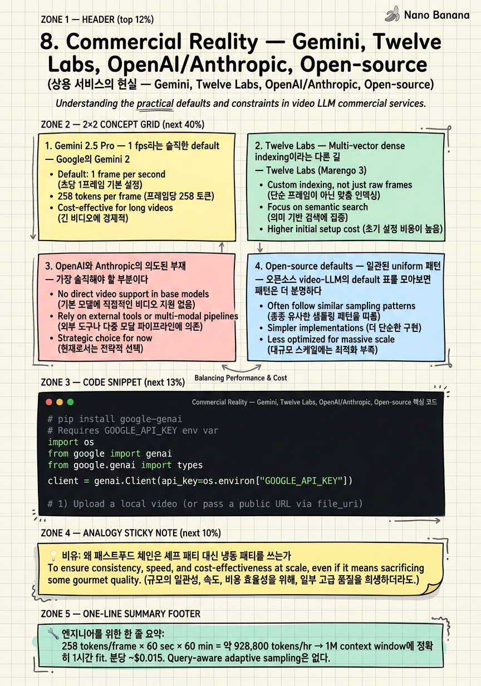

Commercial Reality — Gemini, Twelve Labs, OpenAI/Anthropic, Open-source

🎯 학습 목표
- Gemini 2.5 Pro의 videoMetadata.fps parameter를 actual production code에서 호출하고 token/cost를 추정할 수 있다
- Twelve Labs의 multi-vector indexing이 왜 inference-time QA가 아닌 retrieval task에 특화되었는지 설명할 수 있다
- OpenAI/Anthropic이 video understanding을 deprioritize한 economic + technical 이유를 articulate할 수 있다
- 주요 open-source video-LLM (Qwen2.5-VL, InternVL, LLaVA-Video, NVILA)의 default sampling 전략과 frame cap을 비교할 수 있다
- Index-time과 inference-time의 cost amortization 차이를 정량적으로 설명할 수 있다
- 연구 SOTA를 production에 도입할 때의 trade-off (latency variance, debuggability, infra cost)를 평가할 수 있다
Chapter 3~7에서 우리는 AKS, BOLT, Frame-Voyager, Q-Frame, AdaRD-Key, FOCUS, VideoChat-Flash 등 sampling 연구의 frontier를 훑었다. 모두 uniform baseline 대비 명확한 정확도 우위를 보였고, 일부는 ~93% frame 감축에서도 등가의 성능을 보였다. 그런데도 2026년 6월 현재 상용 video-LLM API를 열어보면 — Gemini 2.5 Pro는 1 fps, Qwen2.5-VL은 2 fps, InternVL은 uniform 16-32 frame, LLaVA-Video는 uniform 64 frame — 누구도 그 연구 SOTA를 default로 채택하지 않았다. 이 갭은 우연이 아니다. 이 chapter는 (a) 각 상용 player가 어떤 구체적 선택을 했는지, (b) 왜 그것이 economically rational인지, (c) 어디서만 예외가 생기는지(retrieval indexing)를 정직하게 살펴본다. 결론은 disappointing하지만 중요하다 — 당신이 production system을 만든다면, 첫 버전은 uniform/fps-based로 시작해야 한다. SOTA sampler는 measured pain point가 생긴 후 swap-in할 plugin으로 설계되어야지, day-one default가 아니다.
핵심 내용
1. Gemini 2.5 Pro — 1 fps라는 솔직한 default
Google의 Gemini 2.5 Pro는 2026년 현재 가장 널리 쓰이는 production video understanding API이다. Document 어디를 봐도 fancy keyframe selection은 없다. Default sampling rate는 1 fps, configurable range는 0.1 fps ~ 24 fps (videoMetadata.fps parameter). Visual은 frame당 258 tokens, audio는 parallel하게 1 Kbps로 처리된다.
수치를 정리하면: - 1 fps × 258 tokens/frame ≈ 15,480 tokens/min (audio 제외) - 1M context window 기준 ≈ 1시간 video (default fps) - 2M context + low-resolution mode ≈ 6시간 video - 가격은 분당 약 $0.015 수준 (입력 video token 기준 환산)
왜 1 fps인가? Google이 공개한 official rationale은 'human-speech granularity' — 사람의 발화 음절·단어 단위와 비슷한 sampling rate이고, 대부분의 narration/dialogue 기반 video QA에는 충분하다는 것. 더 본질적으로는 1 fps가 (a) cost를 predictable하게 만들고 (분당 정확히 N tokens), (b) benchmark를 reproducible하게 만들고 (uniform이라 randomness 없음), (c) latency variance를 0으로 만든다 (query-conditioning이 없으므로 prefill이 결정적).
사용자에게 주는 knob은 videoMetadata.fps 단 하나. fps=0.5로 낮추면 영상 길이를 2배로 늘릴 수 있고 (느린 영상, 강의), fps=2~5로 올리면 빠른 motion (sports, gaming)을 잡을 수 있다. 그러나 query-aware 동적 조절은 없다. AKS/BOLT를 쓰고 싶다면 client side에서 직접 frame을 select해서 image batch로 보내야 한다 — Gemini 자체는 video를 알아서 sample한다.
2. Twelve Labs — Multi-vector dense indexing이라는 다른 길
Twelve Labs (Marengo 3.0 임베딩 모델 + Pegasus 1.2 생성 모델, 2026 라인업)는 sampling 문제에 전혀 다른 답을 낸다. 그들은 video를 약 6초 chunk로 자르고, 각 chunk에서 visual + audio + ASR + motion을 합친 multi-vector dense embedding을 추출한다. 즉, '몇 frame을 고를까?'를 묻지 않고 '모든 segment에 high-dimensional embedding을 미리 입혀두자'를 선택했다.
Key design decisions: - Chunk size ≈ 6s — shot 길이의 통계적 중간값에 맞춤 - Joint modality embedding — visual / audio / ASR transcript / motion이 한 vector에 entangled - Built for retrieval, not inference QA — query는 vector similarity search로 relevant chunk를 찾고, 그 chunk만 Pegasus generative model에 넘긴다 - Pricing: Bedrock 기준 input 1M tokens당 ~$0.07. 분당 indexed cost는 별도 (per-minute indexed)
이것이 작동하는 이유는 cost amortization이다. Index time에는 fancy multi-modal encoding을 써도 괜찮다 — 한번만 한다. 그 후 천 번의 query가 들어와도 retrieval은 vector 비교 한 번에 끝난다. 반대로 Gemini는 매 query마다 video를 처음부터 decode + sample + encode + LLM forward해야 하므로, 처음부터 cheap한 uniform이 합리적이다.
Twelve Labs도 사실은 'sampling'을 하긴 한다 — 6초 chunk라는 fixed-duration uniform이다. Adaptive는 아니다. 단지 sampling output을 frame이 아니라 embedding으로 저장한다는 점이 다르다.
3. OpenAI와 Anthropic의 의도된 부재
가장 솔직해야 할 부분이다. OpenAI는 native video understanding API가 없다. GPT-4o, GPT-4.1 모두 video 입력을 받지 않는다. Official cookbook의 가이드는 '~1 fps로 client-side에서 frame을 뽑아서 image batch로 보내라'다. Sora 2는 generation 전용 (10-25초 clip 생성)이지 understanding이 아니다.
Anthropic의 Claude는 한 발 더 나간다. Video를 아예 입력으로 받지 않는다. Image만, 그리고 PDF의 frame을 image로 변환해야 한다.
왜 두 frontier lab이 video를 deprioritize했을까?
-
TCO가 안 맞는다. Video 1분 = image 60~1800개. Frontier model의 per-token cost 구조에서 video는 image 대비 60~1800배 비싸지만, 사용자가 분당 그만큼의 가치를 지불할 use case는 좁다 (compliance 검토, 의료 영상, 강의 요약 등 vertical 시장). General-purpose chatbot에서는 ROI가 안 나온다.
-
Encoder/decoder pipeline이 무겁다. Video는 decode (codec 의존), sample (정책 의존), encode (visual encoder GPU 비용)의 3단 pipeline이 들어가는데, 이는 OpenAI/Anthropic의 LLM-centric serving 아키텍처에 어울리지 않는다. Gemini는 Google의 YouTube infra 위에 얹은 advantage가 있어서 가능했다.
-
Evaluation이 어렵다. Text/image와 달리 video QA는 benchmark variance가 크고 (sampling 선택만 바꿔도 점수가 크게 흔들린다), customer-facing quality가 측정하기 어렵다.
결과적으로 OpenAI/Anthropic은 video를 '나중에', '필요해지면 partner를 통해' 정도로 미뤘다. 이는 frame sampling 연구가 production에 흡수되지 않은 또 하나의 이유다 — 가장 큰 두 LLM lab의 default가 video를 다루지 않는다.
4. Open-source defaults — 일관된 uniform 패턴
오픈소스 video-LLM의 default 표를 모아보면 패턴은 더 분명하다.
| Model | Default sampling | Max frames | Encoder |
|---|---|---|---|
| Qwen2.5-VL / Qwen3-VL | 2 fps | 768 (FPS_MAX_FRAMES) |
ViT + native dynamic res |
| InternVL2.5 / InternVL3 | Uniform | 16–32 | InternViT-6B |
| LLaVA-Video-7B/72B | Uniform (when > cap) | 64 | SigLIP |
| VILA-1.5 / NVILA | Uniform | 64 (in-context 16) | SigLIP |
| VideoChat-Flash | 1 fps | 768 | UMT-L → HiCo compress |
공통 패턴이 명확하다: - 누구도 query-aware adaptive sampling을 default로 두지 않는다. AKS, BOLT, Q-Frame이 plug-in으로 쓸 수 있게 만들어졌음에도 불구하고.
-
fps-based이든 uniform-N이든 결정적이다. 같은 input에 대해 같은 frame이 뽑힌다.
-
Frame cap이 있다. 64~768. Cap을 넘으면 uniform downsample.
-
Sampling 정책은 model card / config의 한 줄. Algorithm이 아니라 number.
이는 우연이 아니다. 이 model들의 training data 자체가 uniform sampling으로 만들어진 frame sequence를 input으로 받은 supervision으로 학습되었다. Inference time에 갑자기 AKS로 sampling 분포를 바꾸면 train-test distribution mismatch가 발생하고, 일부 benchmark에서는 오히려 성능이 떨어진다. 즉, uniform은 단순한 default가 아니라 model의 trained behavior와 결합된 default다.
5. Retrieval exception — Mixpeek과 index-time amortization
위 패턴에서 명시적으로 벗어나는 곳이 있다. Mixpeek은 PySceneDetect 기반 shot detection으로 chunk를 만들고, 각 chunk에 vuse-generic-v1 embedding + transcript + face recognition + OCR을 entity-level로 입힌다. 이건 uniform이 아니다 — content-aware adaptive segmentation이다.
Twelve Labs도 같은 결을 따른다. 6초 chunk가 uniform처럼 보이지만 그들의 indexing pipeline은 multi-modal joint encoding을 매 chunk에 수행한다 — Gemini의 single visual encoder pass보다 훨씬 무겁다.
왜 retrieval 시스템만 이게 가능한가? Cost amortization 때문이다.
-
Inference-time (Gemini, Qwen, LLaVA): 사용자 query 1회 = sampling 1회 + LLM forward 1회. 매 query마다 sampling cost를 지불한다. Cheap한 uniform이 이긴다.
-
Index-time (Twelve Labs, Mixpeek): video 등록 1회 = sampling/encoding 1회 + query는 vector search로 cheap. 한번 비싸게 sampling을 해두면 1,000번의 query가 그것을 공유한다.
수치적으로, video 1시간에 AKS-style query-aware sampling을 적용하는 데 5초가 더 걸린다 치자. Inference 시스템에서는 사용자 latency에 5초가 더해진다 (각 query마다). Index 시스템에서는 등록 1회에 5초가 더해지고 query latency는 그대로 (~100ms vector search)다. 1,000개 query면 inference는 5,000초 누적, index는 5초 누적.
이것이 commercial reality의 핵심 분기점이다. Adaptive/fancy sampling을 쓰고 싶다면 시스템을 retrieval로 설계해야 한다. Inference-time generative QA를 한다면 uniform이 거의 항상 이긴다 — 적어도 default로는.
6. 갭이 영구히 존재하는 이유
이 chapter의 thesis는 단순하다 — 연구 SOTA와 production의 갭은 일시적 lag이 아니라 구조적이다. Production engineer가 uniform을 고르는 이유는 게으르거나 무지해서가 아니라, 다음 6가지 properties가 어떤 정확도 향상보다 비싸기 때문이다.
-
Predictable cost — 1분 video = 정확히 N tokens. Finance/quoting/SLA가 가능하다. Adaptive sampler는 video 내용에 따라 cost가 흔들린다.
-
Easy benchmarking — 같은 input에 같은 output. Regression test가 가능하다. Stochastic/query-conditioned sampler는 매번 다른 결과.
-
No query-conditioning latency — Prefill을 model warmup 전에 시작할 수 있다. Adaptive sampler는 query를 봐야 sampling이 시작된다 — 사용자 latency가 늘어난다.
-
No additional training/finetuning — 모델 변경 시 sampler도 재훈련하지 않는다. AKS/BOLT가 'training-free'를 강조해도, 실제로는 base model의 train distribution과의 mismatch가 있어 fine-tuning이 도움이 되는 경우가 많다.
-
Debuggable — '왜 이 frame을 골랐나?'에 'frame 1, 31, 61, ...'이 답이 된다. Adaptive sampler는 'CLIP score 0.73, top-K cutoff'를 설명해야 한다.
-
Failure mode가 알려져 있다 — Uniform이 실패하는 곳 (긴 video, sparse event)을 정확히 알고 있다. Adaptive sampler의 failure mode는 새 vid가 들어올 때마다 발견된다.
이는 데이터베이스가 B-tree를 default로 쓰는 이유와 같다. LSM tree, fractal tree, hash index 등이 특정 workload에서 더 빠르지만, B-tree의 known properties (logarithmic, ordered, range scan, lock 동작 등)이 production engineer에게 더 값지다. Known beats optimal, 늘 그렇다.
💡 비유로 이해하기
가설: 잘 만든 fresh patty가 frozen patty보다 분명히 맛있다. 미슐랭 셰프가 매장에 있다면 손님 만족도가 올라간다. 그런데 왜 McDonald's, Burger King, In-N-Out 같은 글로벌 체인은 여전히 frozen 또는 표준화된 patty를 쓰는가?
답은 consistency + cost + ops simplicity가 per-burger 맛 최대화보다 비싸기 때문이다.
-
Frozen patty는 grain, weight, fat ratio, cook time이 결정적이다. 도쿄 매장과 마이애미 매장이 같은 맛.
-
매시간 patty quality variance가 0에 가깝다. CFO가 단가를 정확히 quote할 수 있다.
-
Fryer/grill을 표준 시간에 맞춰 운영할 수 있다. 셰프가 없어도 된다.
-
실패 모드가 알려져 있다 — frozen patty가 dry해지는 조건을 30년간 모았다.
반면 fresh patty는 (a) 매일 fat ratio가 흔들리고, (b) 매 매장의 grill master skill에 의존하고, (c) supply chain이 흔들리면 즉시 무너지고, (d) 새로운 실패 모드가 매주 발견된다.
결과적으로 글로벌 체인은 'patty 맛'이라는 하나의 metric을 포기하는 대신 'predictable, scalable, debuggable burger'를 얻는다.
Frame sampling은 정확히 같은 구조다. Gemini/Qwen/LLaVA의 uniform sampling은 '냉동 패티' — per-video 정확도 최대화는 포기하지만, predictable cost / easy benchmarking / debuggable / no training 의 5가지 properties를 얻는다. AKS/BOLT/Frame-Voyager는 'fresh patty' — per-video 정확도는 분명히 더 높지만, 운영 비용이 다르다.
그리고 Twelve Labs는 'central commissary' 모델이다. Fresh patty를 본사에서 미리 만들어 cryovac해서 매장에 보내는 방식. Index time에 한번 정성껏 만들어두고, 매장 (query)에서는 가열만 한다. 그래서 fancy embedding이 가능하다.
💻 코드 예시
실제 Gemini 2.5 Pro API를 호출해서 video를 처리하는 production code다. videoMetadata.fps parameter — Google이 사용자에게 제공하는 단 하나의 sampling knob — 를 어떻게 조정하고, 그 결과 token cost가 어떻게 달라지는지 보여준다. fps=0.5(저속/강의), 1(default/대화), 2(스포츠/액션)의 세 경우를 비교한다.
# pip install google-genai
# Requires GOOGLE_API_KEY env var
import os
from google import genai
from google.genai import types
client = genai.Client(api_key=os.environ["GOOGLE_API_KEY"])
# 1) Upload a local video (or pass a public URL via file_uri)
VIDEO_PATH = "./lecture_30min.mp4" # 30-min lecture
uploaded = client.files.upload(file=VIDEO_PATH)
# Visual tokens per frame in Gemini 2.5 Pro
TOKENS_PER_FRAME = 258
PRICE_PER_MIN = 0.015 # ~$0.015/min at 1 fps (rough envelope)
def ask_gemini(fps: float, prompt: str, duration_min: float):
"""Run Gemini 2.5 Pro on a video at a specific sampling fps and estimate cost."""
response = client.models.generate_content(
model="gemini-2.5-pro",
contents=[
types.Content(
role="user",
parts=[
types.Part(
file_data=types.FileData(
file_uri=uploaded.uri,
mime_type="video/mp4",
),
# The only sampling knob Google exposes
video_metadata=types.VideoMetadata(fps=fps),
),
types.Part(text=prompt),
],
)
],
)
# Cost envelope: visual tokens ~= fps * 60 * duration_min * 258
est_visual_tokens = int(fps * 60 * duration_min * TOKENS_PER_FRAME)
est_cost = duration_min * PRICE_PER_MIN * (fps / 1.0)
return {
"fps": fps,
"answer": response.text,
"est_visual_tokens": est_visual_tokens,
"est_cost_usd": round(est_cost, 4),
}
prompt = "What are the three main arguments the lecturer makes? Cite timestamps."
for fps in [0.5, 1.0, 2.0]:
result = ask_gemini(fps=fps, prompt=prompt, duration_min=30)
print(f"[fps={result['fps']}] tokens~={result['est_visual_tokens']:,} "
f"cost~=${result['est_cost_usd']}\n -> {result['answer'][:120]}...\n")이 code의 production-실용적 핵심:
-
video_metadata=types.VideoMetadata(fps=fps)— Google이 노출한 sampling control은 이것 하나뿐이다. AKS/BOLT처럼 query-conditioning을 하고 싶다면 client에서 직접 frame을 골라 image part로 보내야 한다. -
fps=0.5, 1, 2의 trade-off:
-
fps=0.5: 30분 video → visual 약 232K tokens, $0.225. 강의처럼 prompt-aware sampling이 약한 use case에 적합.
-
fps=1 (default): visual 약 464K tokens, $0.45. 일반 narration/dialogue에 충분.
-
fps=2: visual 약 928K tokens, $0.90. 1M context의 거의 절반을 시각 token이 차지한다. Sports/action용.
-
Cost envelope이 fps에 거의 선형이다. Adaptive sampler가 fps를 동적으로 조정해주면 좋겠지만, Gemini는 그것을 user가 결정하게 둔다 — 그게 가장 predictable하기 때문이다.
-
Estimation은 visual만 포함이다. Audio (1 Kbps), text prompt, output token은 별도. Production에서는 actual usage가
response.usage_metadata에서 정확히 나오므로 그것을 쓴다. -
실제 운영에서는 use case 별로 fps를 한번 결정하면 그 후에는 거의 바꾸지 않는다. 이게 바로 commercial pattern이다 — sampling은 policy decision이지 매 query 결정이 아니다.
🏭 현업에서의 평가
✅ 시니어가 보는 것
- Gemini 2.5 Pro의 1 fps default를 알고, 'human-speech granularity' + 'predictable cost' 두 rationale로 설명할 수 있다
- videoMetadata.fps의 range (0.1~24)와 256-2M context의 trade-off를 분단위로 계산할 수 있다
- Twelve Labs가 multi-vector dense embedding을 쓰는 이유 = retrieval에 최적화된 cost amortization 패턴임을 즉시 설명한다
- OpenAI/Anthropic이 video를 deprioritize한 이유를 economic TCO와 serving architecture 측면에서 분석한다
- Qwen2.5-VL 2 fps, InternVL uniform 16-32, LLaVA-Video uniform 64 같은 구체적 default를 외우고 있다
- '왜 uniform이 default인가'에 'lazy/legacy'가 아니라 6가지 properties 중 4가지 이상을 든다
- Adaptive sampler를 도입할 때 inference-time vs index-time 중 어느 쪽이 ROI가 좋은지 판단할 수 있다
- Production rollout 시 fancy sampler를 day-one default가 아닌 'measured pain point 후 swap-in plugin'으로 설계한다
⚠️ 레드 플래그
- 'AKS가 SOTA니까 Gemini도 곧 도입할 것이다'라고 단순 추정한다
- Twelve Labs와 Gemini를 같은 카테고리로 묶는다
- OpenAI에 video API가 있다고 잘못 안다
- Open-source defaults를 'training cost 때문'이라고만 설명한다
- Index-time과 inference-time의 cost amortization 차이를 못 든다
- '우리 시스템에 AKS 바로 넣자'고 한다
- Mixpeek/Voxel51 같은 retrieval 시스템과 generative QA 시스템의 차이를 설명 못함
- 연구 paper의 accuracy gain만 보고 production cost properties를 평가에 포함하지 않음
🎤 예상 인터뷰 질문
- **Q1.** Gemini 2.5 Pro의 default fps는 1입니다. 만약 당신이 강의 video 전용 SaaS를 만든다면 fps를 0.5로 낮춰서 비용을 절반으로 줄이고 싶을 겁니다. 어떤 측정으로 그 결정이 안전하다고 prove하시겠습니까? 어떤 edge case가 fps=0.5에서 실패할까요? 그리고 실패하는 video를 detect해서 fps=1로 fallback하는 system은 어떻게 설계하시겠습니까?
- **Q2.** 당신 회사는 1시간짜리 회의 video 10만 개에 대해 'Q&A on demand' 서비스를 제공합니다. (a) Gemini를 매 query마다 호출하는 inference 방식과, (b) Twelve Labs로 index해두고 retrieval+generation하는 방식. 1년 동안 video당 평균 50개의 query가 발생한다고 가정할 때 두 모델의 cost를 분단위까지 추정하고, 어느 방식이 ROI가 높을지 판단하세요.
- **Q3.** Qwen2.5-VL은 2 fps with FPS_MAX_FRAMES=768을 default로 씁니다. 당신이 이 model을 self-host해서 30분짜리 surgical video QA를 한다고 합시다. 2 fps × 30분 = 3,600 frame이 cap 768을 초과합니다. Qwen은 이때 uniform downsample을 하는데, 외과 의사가 'critical moment에서 frame이 빠졌다'고 컴플레인합니다. AKS/BOLT plug-in vs shot detection + multi-pass query 중 무엇을 고르겠습니까?
✨ 핵심 요약
Gemini 2.5 Pro는 1 fps default — videoMetadata.fps 단 하나의 knob
258 tokens/frame × 60 sec × 60 min = 약 928,800 tokens/hr → 1M context window에 정확히 1시간 fit. 분당 ~$0.015. Query-aware adaptive sampling은 없다.
Twelve Labs는 retrieval 시스템이지 generative QA가 아니다
Marengo 3.0 / Pegasus 1.2가 multi-vector dense embedding (visual+audio+ASR+motion joint)을 6초 chunk마다 만드는 이유는, index time에 한번 비싸게 만들어두면 1,000번의 query가 그 cost를 amortize하기 때문이다.
OpenAI는 native video가 없고, Anthropic은 video를 받지 않는다
OpenAI cookbook은 'client-side ~1 fps frame extraction → image batch'를 권장한다. Anthropic Claude는 image만. 두 frontier lab은 video TCO와 LLM-centric serving architecture 부적합 때문에 video understanding을 deprioritize했다.
Open-source defaults는 일관되게 uniform/fps-based
Qwen2.5-VL 2 fps (768 cap), InternVL2.5/3 uniform 16-32, LLaVA-Video uniform 64, NVILA uniform 64. 누구도 query-aware adaptive를 default로 두지 않는다.
Index-time vs Inference-time이 sampling 정책의 분기점이다
Inference-time 시스템은 매 query마다 sampling cost를 지불하므로 cheap한 uniform이 이긴다. Index-time 시스템은 등록 1회에 sampling cost를 amortize하므로 fancy multi-modal encoding이 가능하다.
Production은 정확도가 아니라 6가지 properties를 산다
Predictable cost, easy benchmarking, no query-conditioning latency, no additional training, debuggable, known failure mode. known beats optimal.
Mixpeek은 retrieval이라서 shot detection이 가능하다
Mixpeek은 PySceneDetect 기반 content-aware segmentation을 쓰는 드문 예외다. 이는 그들이 inference QA가 아닌 search/retrieval workload를 다루기 때문이지 fancy sampler가 보편적으로 production-ready여서가 아니다.
연구 SOTA는 swap-in plugin으로 설계하되 day-one default가 아니다
Production rollout 순서는 (1) uniform/fps-based로 시작, (2) accuracy/cost pain point를 measure, (3) failing video class를 식별, (4) 그 class에 한해 AKS/BOLT를 plugin으로 swap-in, (5) variant별 A/B로 ROI 검증.